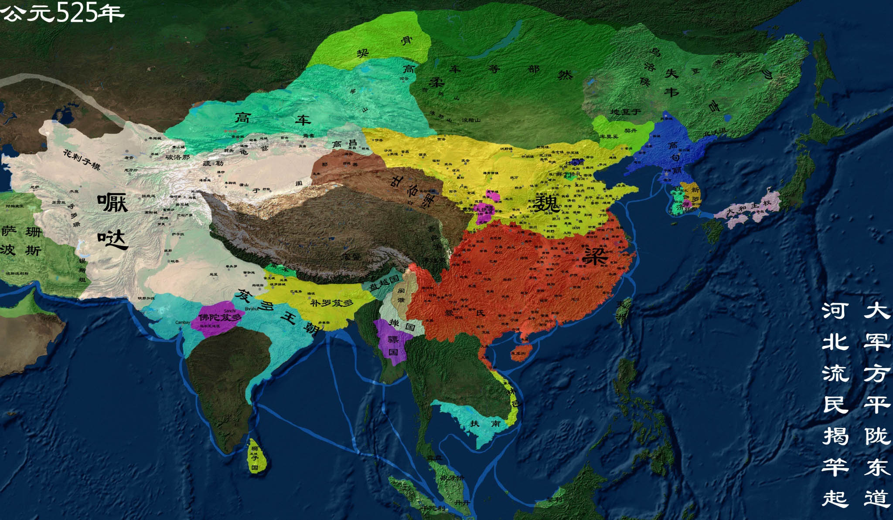

魏晋南北朝
魏晋南北朝，是中国历史上政权更迭最频繁的时期，主要分为魏朝（曹魏）、西晋、东晋和南北朝时期， 由于长期的封建割据和连绵不断的战争，使这一时期中国文化的发展受到特别的影响。其突出表现则是玄学的兴起、 佛教的输入、道教的勃兴及波斯、希腊文化的羼入。
【相关人物】
[司马炎]
[谢安]
[阮籍]
.......
[更多人物]
【相关书籍】
[两晋南北朝那些事]
.......
[更多书籍]

公元220年，曹丕称帝，国号魏。
汉朝末年，皇权衰落，群雄割据。曹操挟持汉献帝，历经数十年征战，统一北方，被封为魏王，丞相，掌握汉末实权。220年正月，曹操病死。死后，曹丕继位魏王和丞相，掌管大权。虽然曹操曾经挟天子以令诸侯，却从不敢登上皇帝的宝座。
公元223年 刘备驾崩
公元223年 农历癸卯，汉帝刘备崩殂于白帝城，刘禅继帝位。蜀汉与东吴重修和好。雍闿叛乱。朱桓斩杀常雕，生擒王双，朱然守江陵，魏军全线撤军。
公元234年 五丈原星落
公元234年，中国历史上仍属三国时期，蜀国军师诸葛亮在第六次北伐中，行至五丈原，重病而亡。他辅佐刘备建立了蜀汉政权，后被封为“武乡侯”。武侯墓建于公元234年，墓高5米，方圆60米。
公元249年 司马懿政变
曹操封魏王后，以司马懿为太子中庶子以佐助曹丕。曹丕临终时，令司马懿与曹真等为辅政大臣， 辅佐魏明帝曹叡。明帝时，司马懿屡迁抚军大将军、大将军、太尉等重职。明帝崩，托孤幼帝曹芳以司马懿和曹爽。 曹芳继位后，司马懿先是遭到曹爽排挤，迁官为无实权的太傅。正始十年（公元249年）， 司马懿趁曹爽陪曹芳离洛阳至高平陵扫墓，起兵政变并控制京都。自此曹魏军权政权落入司马氏手中， 史称高平陵事件。
公元265年 西晋建立
西晋（265年—316年），是中国历史上三国时期之后的统一王朝。另与东晋合称晋朝，传四帝。 从晋武帝建国开始，国祚51年；从灭东吴、统一全国始，为37年。为了区别于东晋，史称西晋， 两晋又被称为司马晋。
公元318年 东晋建立
东晋（317年－420年），是由西晋皇族司马睿南迁后建立起来的偏安政权。此外，史书中又仿东汉称中汉， 称东晋为中晋，寓以晋室中兴之意；又东晋统治地区大部分在江东，古称江左，因此以江左代指东晋。
公元383年 淝水之战
淝水之战，发生于公元383年，是东晋十六国时期北方的统一政权前秦向南方东晋发起的侵略吞并的一系列战役中的决定性战役，前秦出兵伐晋，于淝水（现今安徽省寿县的东南方）交战，最终东晋仅以八万军力大胜八十余万前秦军。
公元420年 南北朝
南北朝（420年—589年）是南朝和北朝的统称。南北朝时期是中国历史上的一段大分裂时期，也是中国历史上的一段民族大融合时期，上承东晋十六国下接隋朝，由公元420年刘裕代东晋建立刘宋始，至公元589年隋灭陈而终。
公元548年 侯景之乱
侯景之乱，又称太清之难 ，是指中国南北朝时期南朝梁将领侯景发动的武装叛乱事件。侯景本为东魏叛将，被梁武帝萧衍所收留，因对梁朝与东魏通好心怀不满，遂于548年以清君侧为名义在寿阳（今安徽寿县）起兵叛乱，549年攻占梁朝都城建康（今江苏南京），将梁武帝活活饿死，掌控梁朝军政大权。
公元581年 隋朝建立，北周亡
隋朝（581——619）是中国历史上承南北朝下启唐朝的大一统朝代。隋朝出现万国来朝的局面。当时周边国家如高昌、倭国、高句丽、新罗、百济与东突厥等国皆深受隋朝文化与典章制度的影响，以日本遣隋使最为著名。